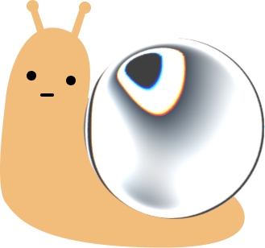

Hi, I'm Faye — a product designer interested in how AI and emerging technologies can augment how people and teams think, create, and work.
My name is Xuefei Wang, and I usually go by Faye. Over the past three years, I've designed AI-powered tools, complex workflows, and products across web, mobile, and immersive experiences. I especially enjoy untangling ambiguous systems, finding the right role for intelligence within a workflow, and turning technical possibilities into experiences that feel clear, useful, and a little delightful.
I care about both the big picture and the tiny details: how a system fits together, how a team can scale it, and how one interaction, animation, or line of copy can change the way a product feels.
Currently based in New York.

- listening to music and playing drums
- playing games and overthinking their systems and interactions
- making something delicious in the kitchen
- playing with my cat
Always happy to talk about AI, creative tools, interaction ideas, or the game I'm currently trying to get better at.
Placeholder — a closing note about what you're working toward, learning, or looking for next. Swap this paragraph for the real thing.